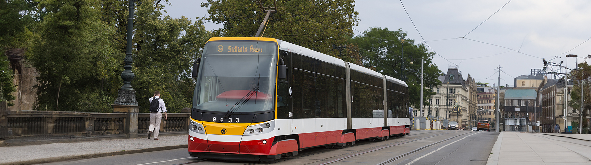

Ahoj! Jmenuji se Jakub Černý a jsem programátor se sídlem v Praze. Aktuálně dokončuji bakalářské
studium
na Fakultě informačních technologií ČVUT.
Zajímám se o softwarové inženýrství, webový vývoj, DevOps a projektové řízení.
V průběhu studia jsem pracoval na celé řadě projektů, které najdete níže. Toto portfolio slouží
jako jejich přehled — u každého projektu najdete krátký popis i odkaz na GitHub repozitář.
Python, Tkinter, Plánování, Projektové řízení – Semestrální projekt, který
navazoval na
diplomovou práci jiného studenta zabývající se postavením Tactile Matrix Box (TMB) na území
fakulty. TMB zpracovával data o ArUcO kartičkách (připomínající QR kód) na stole pomocí kamerky.
Náš tým vytvořil Python server, který tato data přijímal a následně pomocí Tkinter Python
knihovny vytvořil logiku za vyhodnocováním kartiček a zobrazoval budovy a vyhodnocování zpět na
stůl
pomocí projektoru.
GitLab CI/CD, Docker, DevOps – V tomto cvičném Java projektu jsem si osvojil
práci s GitLab CI/CD pro automatizované testování a sestavení projektu a vytvoření Docker image
a
kontejneru, který byl uložen v GitLab Container Registry.
V prostředí OpenStack jsem následně využil Ansible k vytvoření Playbooku, který jsem spustil na
řídící virtuálce ve školním cloudu. Ten připravil prostředí cílové (řízené) virtuálky, přihlásil
se ke zmíněnému registry a stáhl potřebný Docker image.
Z něj se následně spustil kontejner, ke kterému bylo možné se připojit přes IP adresu virtuálky
a plnohodnotně tak využívat běžící Java aplikaci ve školním cloudu.

OntoUML, UML, BPMN, DEMO, OCD – Semestrální projekt simulující galaktickou
dopravní
společnost. Řeší plánování misí, přepravu zboží a údržbu lodi pomocí ontologického modelování,
UML, procesů a transakcí.

JavaScript – Kód řeší načtení dat o zastávkách MHD, následné vyhledávání mezi
nimi a zobrazení informací o nástupištích a linkách, případně i návrhy podobných výsledků.
Používá se přitom manipulace s DOMem a asynchronní funkce pro načtení dat.

C++, Multithreading – Program, který na začátku dostane seznam zákazníků a
dodavatelů. Každý zákazník pak dostane vlastní obslužné vlákno, které od něj vyzvedne poptávku
na plechy o určité velikosti. Obslužné vlákno získá ceníky od dodavatelů k zadanému materiálu a
předá objednávku pracovním vláknům. Pracovní vlákna pak za použití dynamického programování
efektivně spočítají tu nejnižší cenu, za kterou jsme schopni daný plech svařit z plechů
dodavatelů. Pracovní vlákna pracují
souběžně a lze obsloužit několik zákazníků najednou.

PHP, Symfony – V tomto projektu používám PHP framework Symfony k vytvoření
interaktivní webové aplikace k evidenci zaměstnanců. Zaměstnance lze vyhledávat, přidávat a
upravovat. Každý zaměstnanec má funkce/role a účty, které lze
přidávat, upravovat a mazat. Projekt využívá MVC architekturu.